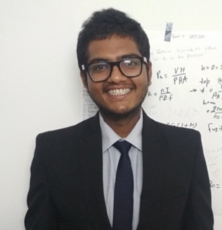

I build robots end to end — from CAD and actuators up to policies and the software people actually operate them with. Ten years of it: quadrupeds, humanoids, industrial arms, mobile robots. Currently finishing a PhD on continual learning for manipulation at IIT Jodhpur, and working remotely with robotics teams in the US on humanoid manipulation, industrial robot cells and autonomous mobile robots.
I am on the path of discovering who I am by creating robots. I hypothesise that we — humans — are what cannot be automated. So my effort goes towards intelligent autonomous machines, to free us from the mundane and leave what is actually worth doing.
A long-lived robot should be able to pick up a new manipulation skill without rebuilding a training set of everything it already knows. I study the stricter version of this: each task arrives with a temporary, independently produced teacher, and both the teacher and its data are thrown away once the skill has been absorbed. Distillation through a common action-distribution interface, plus importance-weighted parameter consolidation to protect what is already there. It accepts RL, behaviour-cloning and classical-control teachers alike.
Sole architect of a domain-neutral, plan-driven robot cell for a two-arm FANUC CR-7iA/L bench. JSON plans compose generic skills — move, pick, place, detect, observe, actuate, measure — and the same upper stack drives either the MuJoCo simulation or the real cell, unchanged. 762 of 880 commits across a 10,000-file ROS 2 / Python / C++ / React codebase built from scratch in under three months, including a contracts layer that generates types for all four languages from one schema, and a tiered test system with a sim–real parity guard.
Deployed a GR00T N1.7 vision-language-action policy on a physical Unitree G1, designing the three-process architecture that decouples the 20 Hz policy clock from the whole-body controller's fast loop over DDS — the piece that made closed-loop inference stable on real hardware. Also built the VR teleoperation and data-collection path: 50 Hz loop, 28-DOF upper-body IK, LeRobot export at 20 Hz, sharing the identical controller stack as inference.
Built a 1,167-episode failure-rich manipulation dataset with physics-ground-truth labels, and the failure taxonomy that came out of it — ~80% of failures physical, ~14% grounded-spatial, and action noise a much weaker lever than task difficulty. Trained and benchmarked reward models (MAE 0.032 against 0.2 for the published baseline), then established that dense reward models did not beat behaviour cloning under RL fine-tuning — a negative result, but a decisive one.
166 of 175 commits, ~60k lines: MuJoCo simulation, Nav2, a FastAPI edge server and a React operator console, running as supervised production and development services. Before the pivot to datacenter inspection, I led the full autonomous hospital delivery robot — multi-floor autonomy, sensor fusion, elevator integration and offline-first QR/PIN compartment access. Alongside the engineering: product spec, customer LOIs, pricing and the contract-manufacturer relationship.
Custom MoveIt Pro behaviours and a differential-IK planner plugin used across client deployments. Optimised ROS 2 mapping for marine sonar on embedded hardware. Isaac Sim and Gazebo environments for deformable manipulation, agricultural scenes and gripper development.
Vision-based navigation for GPS-denied environments, demonstrated on a quadcopter. RL frameworks for learning multiple vision-based manipulation tasks on robotic arms — the work that became the Robotica paper.
Live RGB, metric depth and 3D point cloud in the browser, with real arm control — 288 files, ~48k lines, written in two weeks. Two arms swappable at runtime from the browser: xArm6 at 250 Hz joint-position servo, Kinova Gen3 at 1 kHz cyclic in position and torque. Five controllers, including gravity compensation, compliant joint PD, and Cartesian impedance / operational-space control. Four metric-depth backends behind one interface, plus a SAM2 worker for click-driven masks and 3D boxes.
Two things I enjoyed here: chasing a 27 fps → 1.7 fps regression down to a single RealSense filter stage, and measuring what six cameras can actually do on the rig instead of trusting the spec sheets — five concurrent 720p MJPG streams, zero dropped frames.
A 3D-printable quadruped built from nothing: custom leg mechanism, CAD, fabrication, system identification — then an RL locomotion policy trained in MuJoCo and transferred to the physical robot. Hardware v2 in progress.
Simulation-ready scenes from real captures, built so that every stage is swappable and measured — pose backend, scale recovery, splat backend, all scored on PSNR / SSIM / LPIPS against held-out views, so "what works best" is answered by data rather than by a paper's claims. Comparable pipelines need an ArUco marker for metric scale; recovering scale from depth instead removes the marker, the hand-eye capture and the sim(3) fit entirely.
Free-hand teleoperation of a MuJoCo scene entirely in one browser tab — no server, no VR headset. WASM physics simulates a free-floating Shadow Hand over a table of blocks; your webcam tracks your real hand. It ports clutch/delta control, stillness-gated engage, workspace clamping and a gripper synergy profile over from a Quest-3 VR stack, and deliberately drops the depth-streaming transport — with physics running in the browser, there is nothing to stream.
Point-cloud VR teleoperation over WebXR, driving simulated or real arms through one stack, with hand-eye calibration tooling and measured control-bandwidth limits. 60 of 105 commits to the framework.
Say the wake word or tap a key, talk, stop — the text lands in whatever field has focus. Wake-word spotting runs entirely on your machine; audio only leaves it once a recording has actually started. The core client has no Python dependencies at all.
Languages — Python, C++, TypeScript/JavaScript, MATLAB
Robotics — ROS 2 / ROS, MoveIt, Nav2, Pinocchio, motion planning, differential IK, operational-space and impedance control, gravity compensation, calibration, SLAM
Robot learning — PyTorch, JAX, RL, imitation learning, VLA policies (GR00T, OpenVLA), diffusion policies, reward modelling, continual learning, sim-to-real
Simulation — MuJoCo / MuJoCo-Warp, Isaac Sim, mjlab, Gazebo, PyBullet, Unity, Blender
Perception — OpenCV, SAM2, metric depth estimation, Gaussian splatting, NeRF, stereo and RGB-D, multi-camera registration, MediaPipe
Robots — FANUC CR-7iA/L, Unitree G1, Kinova Gen3, KUKA iiwa14, UR5, xArm6, TAL BRABO, Husky, TurtleBot, P3DX, quadrupeds, quadcopters, 26-DOF humanoid
Hardware — RealSense, ZED, Kinect, motion capture, IMU/GPS/LiDAR, Dynamixel, Jetson, Arduino, Raspberry Pi, mechanical CAD, 3D printing
Teaching assistant for Experimental Robotics at IIT Jodhpur, where we take students from concepts to working code on real hardware. I have run ROS workshops, mentored a good number of student projects, and was Head (2015) and Mentor (2016) of the IITJ Robotics Club. Coursera mentor for Robotics: Estimation and Learning (2017). None of this was for money — I simply like teaching.